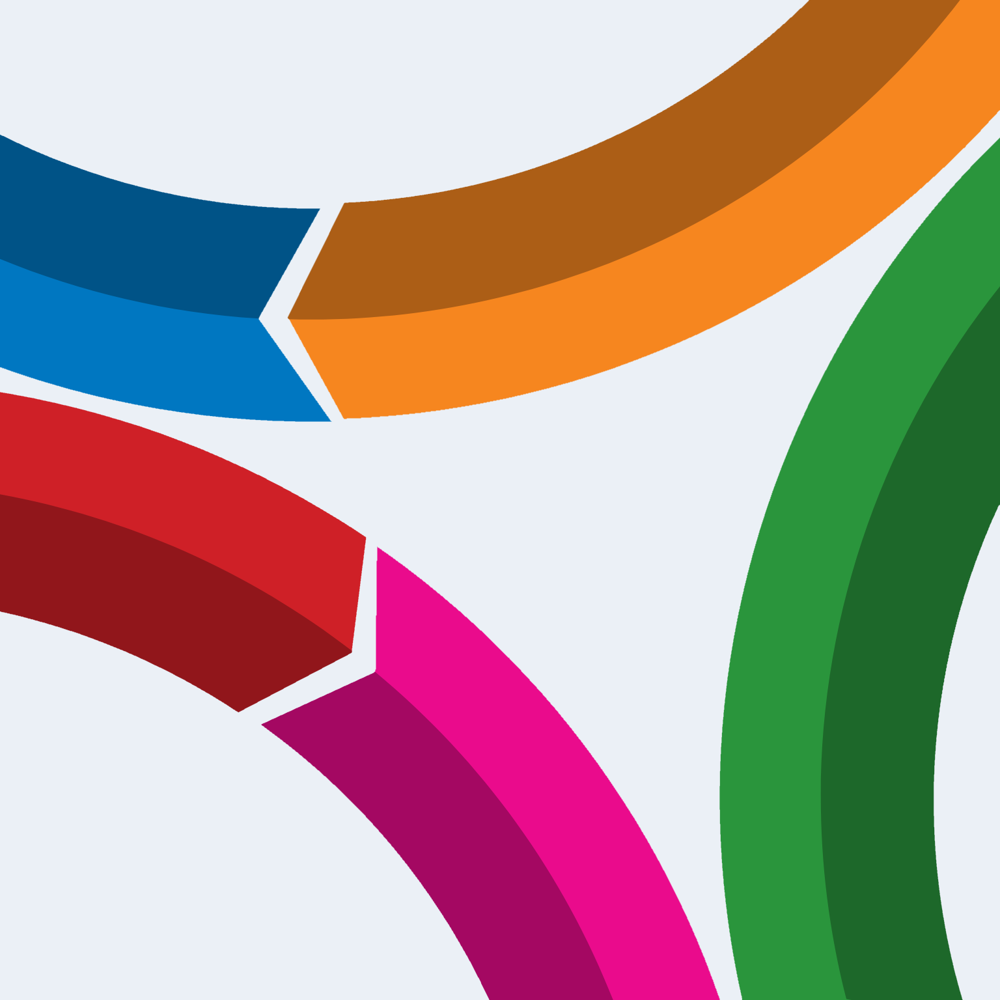

Child progress

KLPT toolSelect an avatar, then choose domains, subdomains and elements from one guided screen.
Saved sessions
Resume a session
Create session
Select an avatar
Selected element
This item has no further levels to explore.
Child progress

KLPT toolSelect an avatar, then choose domains, subdomains and elements from one guided screen.
Saved sessions
Create session
Selected element
This item has no further levels to explore.